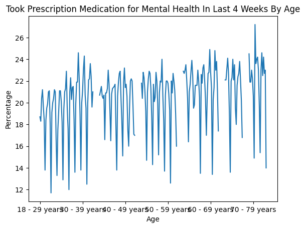
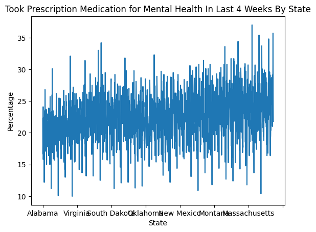
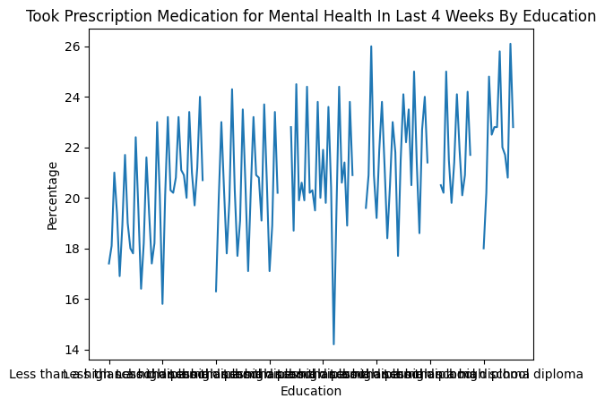

The U.S. Census Bureau, in collaboration with five federal agencies, launched the Household Pulse Survey to produce data on the social and economic impacts of Covid-19 on American households, including employment status, consumer spending, food security, housing, education disruptions, and dimensions of physical and mental wellness.
I was interested in analyzing the affects of the pandemic on mental health.
Questions
Does the impact of COVID-19 differ between various socio-economic groups?
What is the scale of measures taken by individuals to improve mental health?
Exploratory Data
Step 3: Create another section in your notebook that explores and presents information about your data
This section does not need to be polished yet, but it should be a good foundation This can include summary information about the data, summary statistics where appropriate, an identification of where there may be missing/incorrect/outlier data, and data preprocessing It should include at least 4 exploratory data visualizations
import requestsimport pandas as pdfrom bs4 import BeautifulSoupdf = pd.read_csv('https://data.cdc.gov/api/views/yni7-er2q/rows.csv?accessType=DOWNLOAD')df.head(5)
<class 'pandas.core.frame.DataFrame'>
RangeIndex: 10404 entries, 0 to 10403
Data columns (total 13 columns):
# Column Non-Null Count Dtype
--- ------ -------------- -----
0 Indicator 10404 non-null object
1 Group 10404 non-null object
2 State 10404 non-null object
3 Subgroup 10404 non-null object
4 Phase 10404 non-null object
5 Time Period 10404 non-null int64
6 Time Period Label 10404 non-null object
7 Time Period Start Date 10404 non-null object
8 Time Period End Date 10404 non-null object
9 Value 9914 non-null float64
10 LowCI 9914 non-null float64
11 HighCI 9914 non-null float64
12 Confidence Interval 9914 non-null object
dtypes: float64(3), int64(1), object(9)
memory usage: 1.0+ MB
NameError: name 'height' is not defined
Data Analysis
Step 4: Create a section in your notebook that includes the beginnings of your analysis
This section also does not need to be polished yet, but it should be a good foundation This should include code for data analysis directly relevant to your question(s) of interest Include an additional 4 data visualizations that are directly relevant to your topic Or describe 4 data visualizations that you want to make
import matplotlib.pyplot as pltaa = df1[df1['Indicator'] =='Took Prescription Medication for Mental Health, Last 4 Weeks']a = aa[df1['Group'] =='By Age']a.plot(x ='Subgroup', y ='Value', legend =None)plt.xlabel("Age")plt.ylabel("Percentage")plt.title("Took Prescription Medication for Mental Health In Last 4 Weeks By Age")
/tmp/ipykernel_191/2616521492.py:4: UserWarning: Boolean Series key will be reindexed to match DataFrame index.
a = aa[df['Group'] == 'By Age']
Text(0.5, 1.0, 'Took Prescription Medication for Mental Health In Last 4 Weeks By Age')

import matplotlib.pyplot as pltaa = df1[df1['Indicator'] =='Took Prescription Medication for Mental Health, Last 4 Weeks']a = aa[df1['Group'] =='By State']a.plot(x ='Subgroup', y ='Value', legend =None)plt.xlabel("State")plt.ylabel("Percentage")plt.title("Took Prescription Medication for Mental Health In Last 4 Weeks By State")
/tmp/ipykernel_191/2658758587.py:4: UserWarning: Boolean Series key will be reindexed to match DataFrame index.
a = aa[df['Group'] == 'By State']
Text(0.5, 1.0, 'Took Prescription Medication for Mental Health In Last 4 Weeks By State')

import matplotlib.pyplot as pltaa = df1[df1['Indicator'] =='Took Prescription Medication for Mental Health, Last 4 Weeks']a = aa[df1['Group'] =='By Education']a.plot(x ='Subgroup', y ='Value', legend =None)plt.xlabel("Education")plt.ylabel("Percentage")plt.title("Took Prescription Medication for Mental Health In Last 4 Weeks By Education")
/tmp/ipykernel_191/1813120624.py:4: UserWarning: Boolean Series key will be reindexed to match DataFrame index.
a = aa[df['Group'] == 'By Education']
Text(0.5, 1.0, 'Took Prescription Medication for Mental Health In Last 4 Weeks By Education')

import matplotlib.pyplot as pltaa = df1[df1['Indicator'] =='Took Prescription Medication for Mental Health, Last 4 Weeks']a = aa[df1['Group'] =='By Race/Hispanic ethnicity']a.plot(x ='Subgroup', y ='Value', legend =None)plt.xlabel("Race")plt.ylabel("Percentage")plt.title("Took Prescription Medication for Mental Health In Last 4 Weeks By Race")
/tmp/ipykernel_191/2819595990.py:4: UserWarning: Boolean Series key will be reindexed to match DataFrame index.
a = aa[df['Group'] == 'By Race/Hispanic ethnicity']
Text(0.5, 1.0, 'Took Prescription Medication for Mental Health In Last 4 Weeks By Race')